Faux Studio Furniture Finishes
Yes, ordinary furniture can be transformed into showcase pieces with the proper application of creative faux finishing techniques. Low cost, used furniture pieces often provide fantastic opportunities to become stunning works of art, often presenting better than very expensive pieces when treated by our artists. Let us know what type of furniture and genre you are looking for, and we'll have find and convert that piece into something you will treasure forever. Check out our before / after pictures below of furniture that we have transformed.


 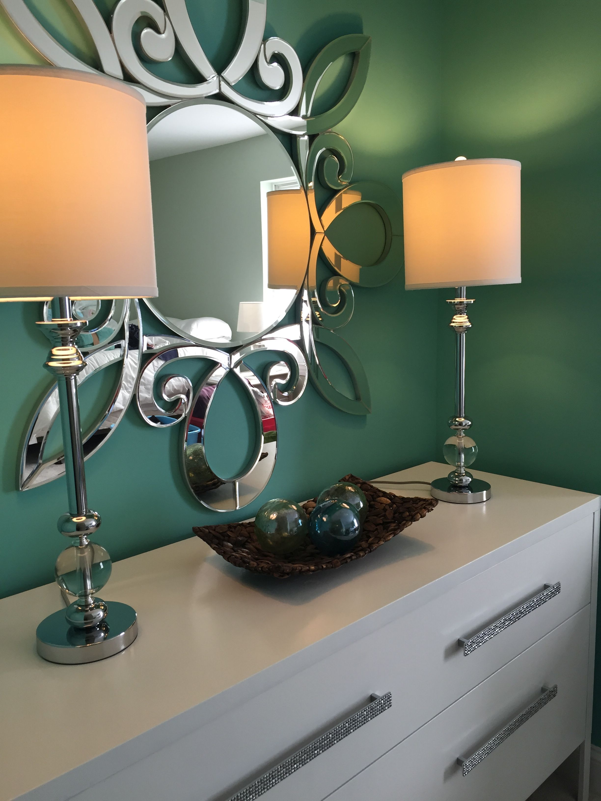
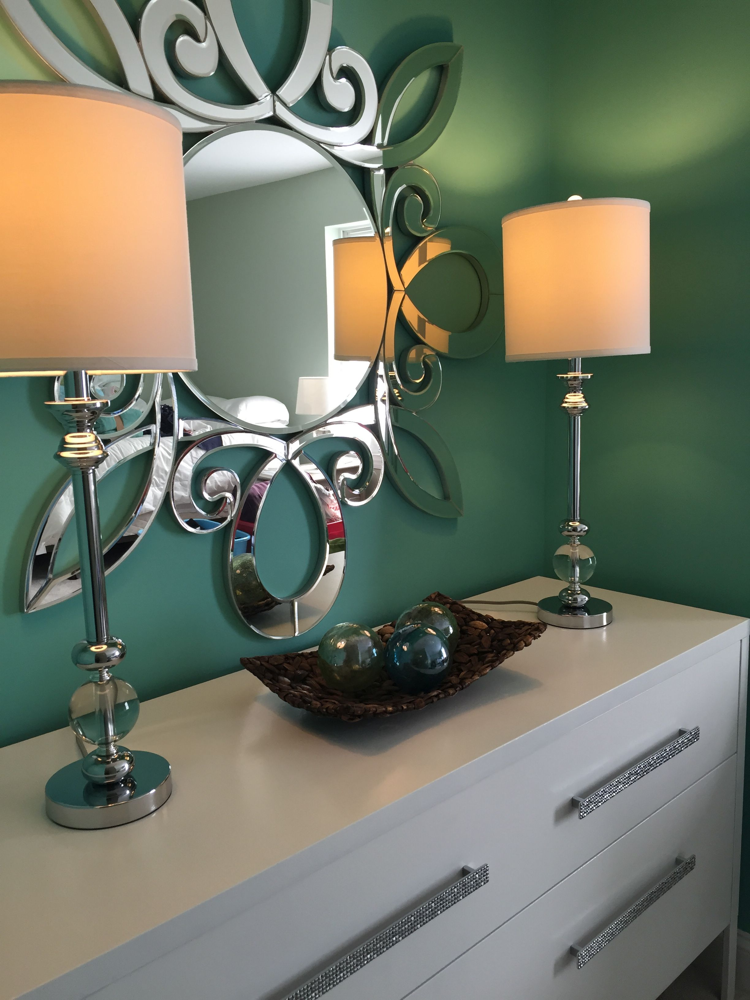
 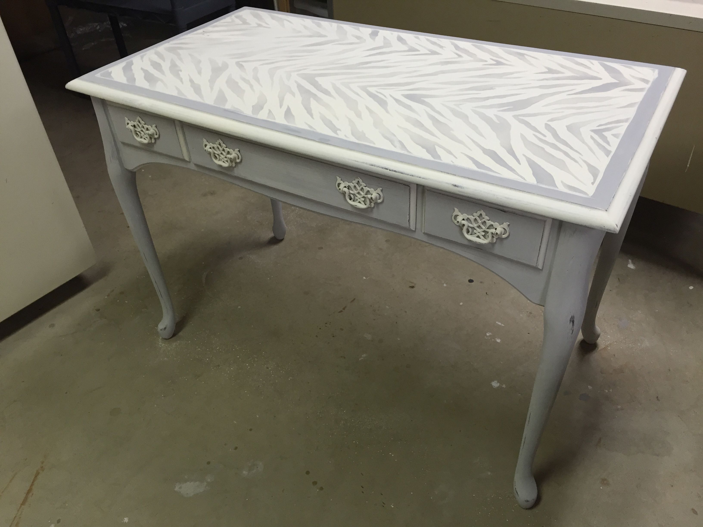
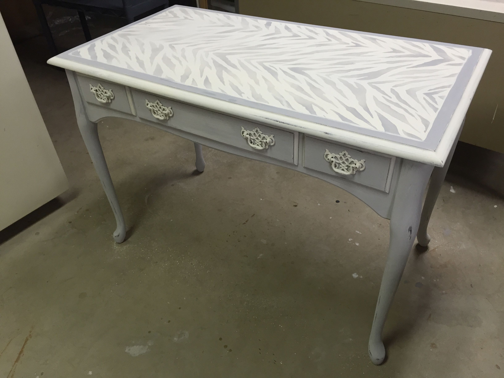


 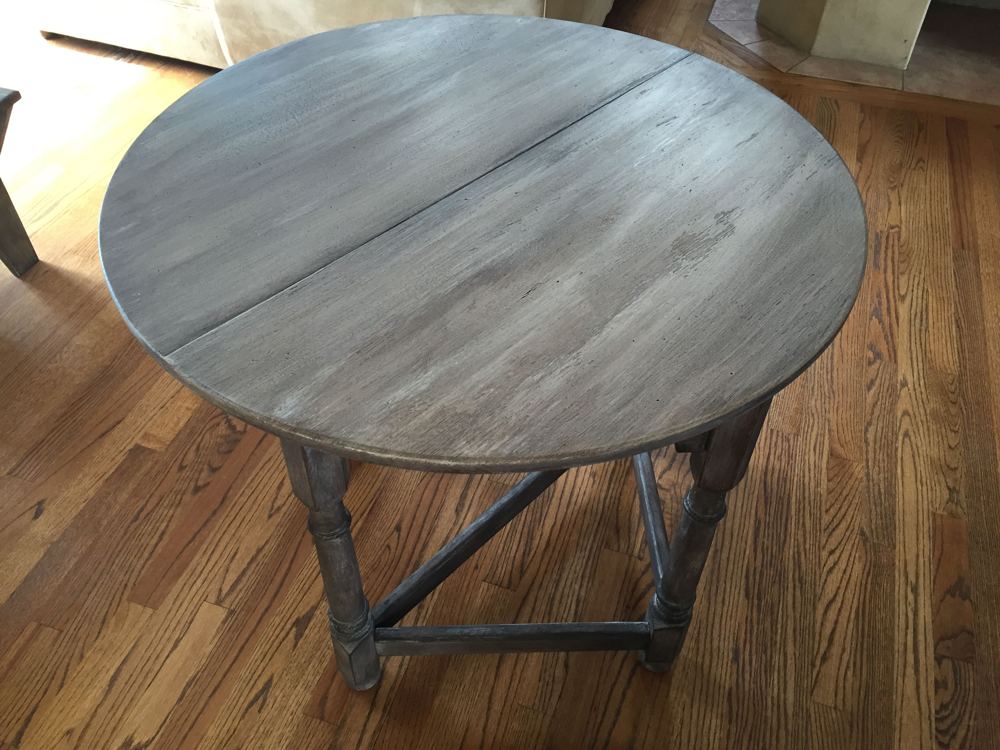
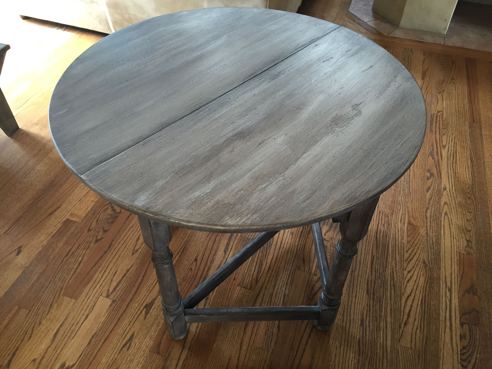
 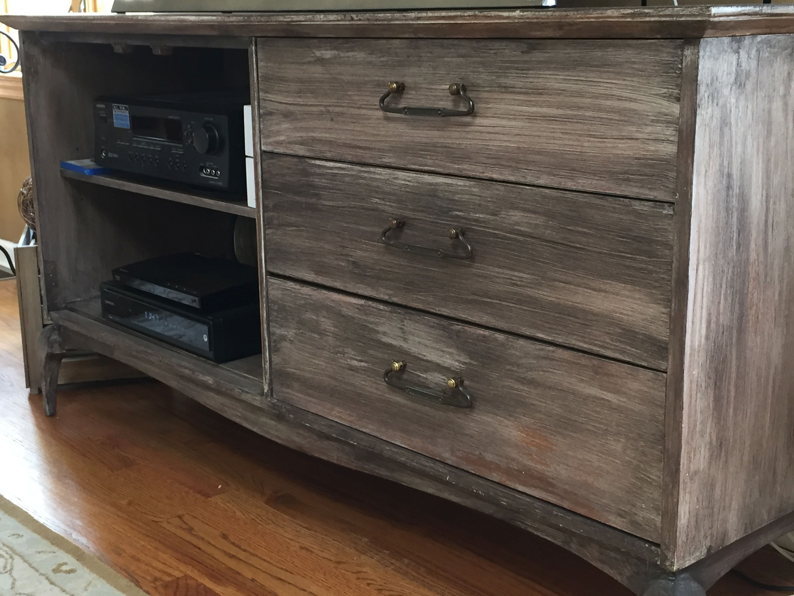
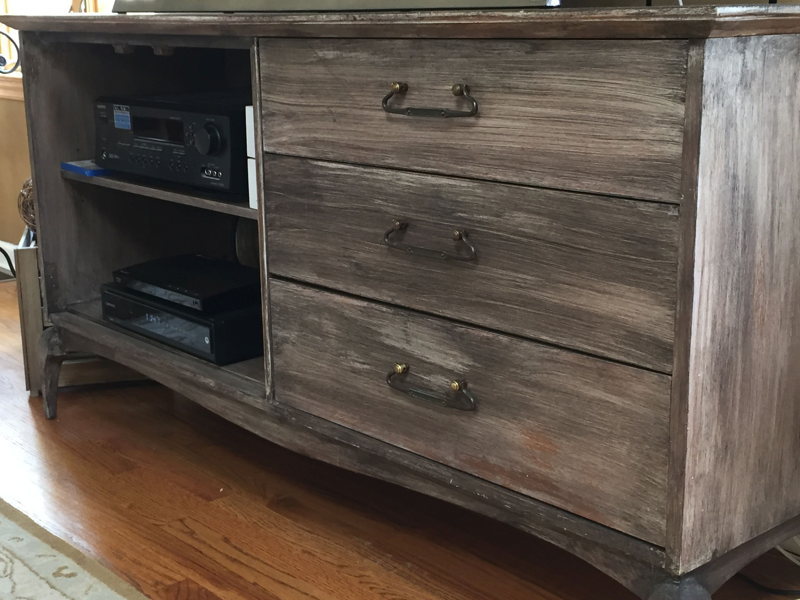


 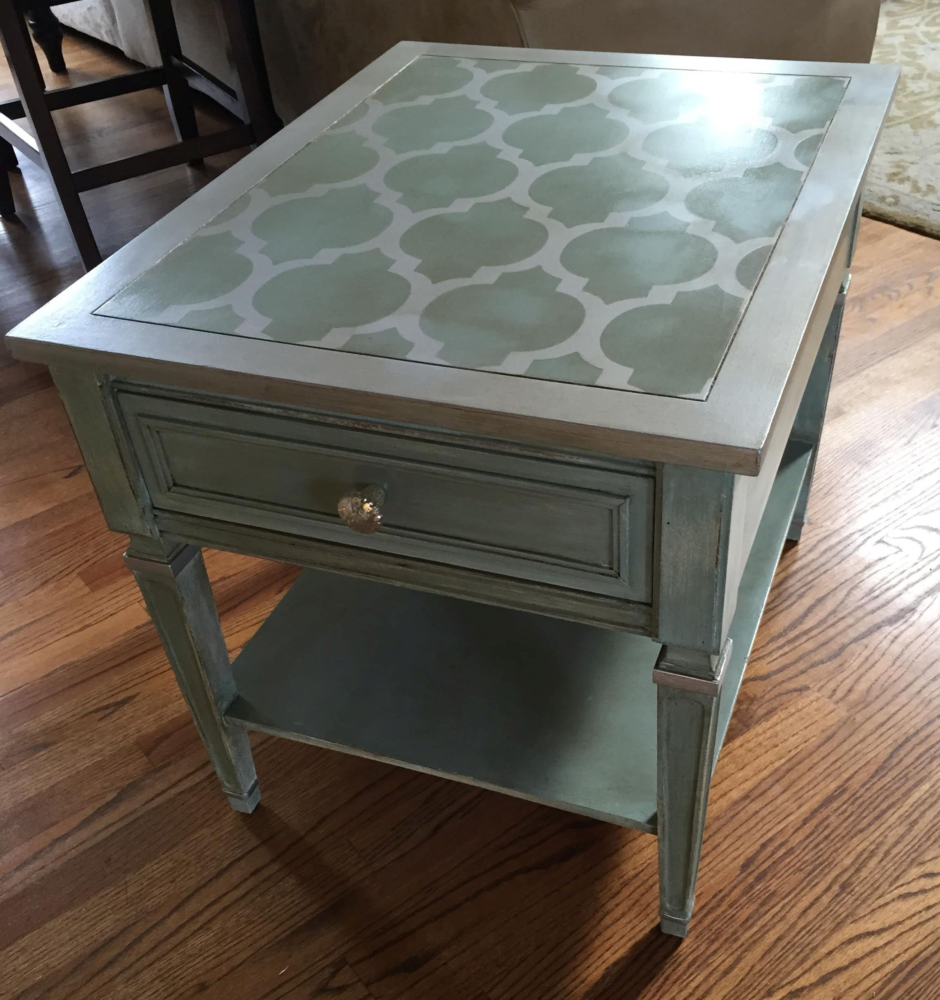
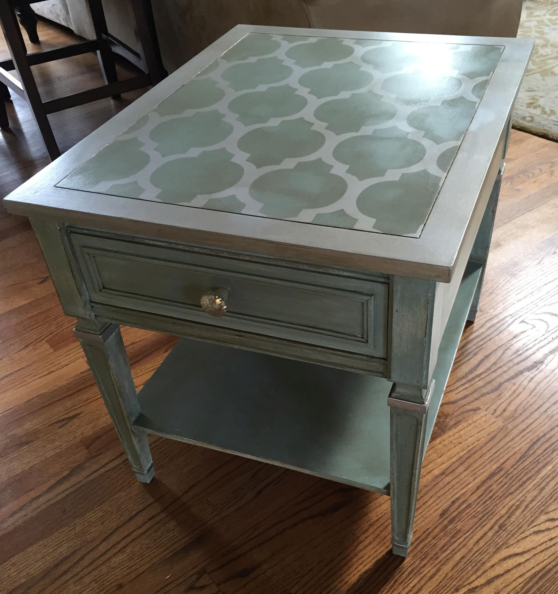

 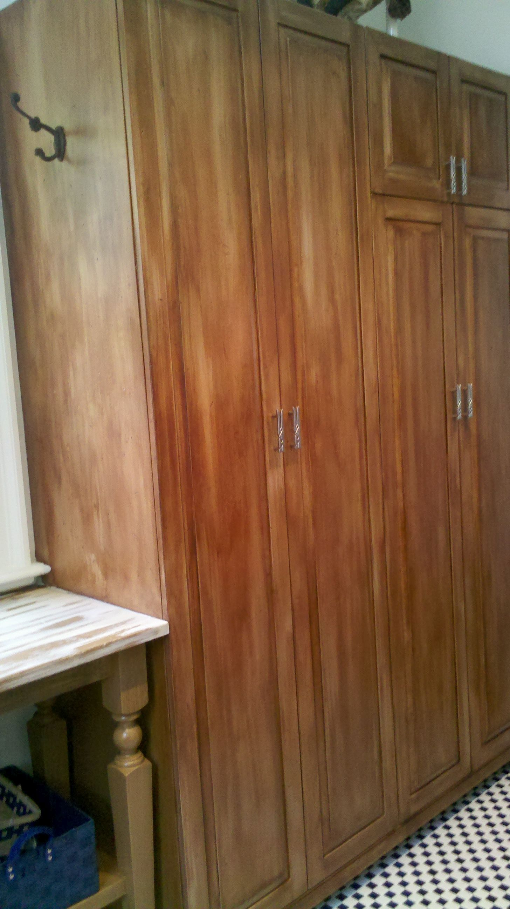
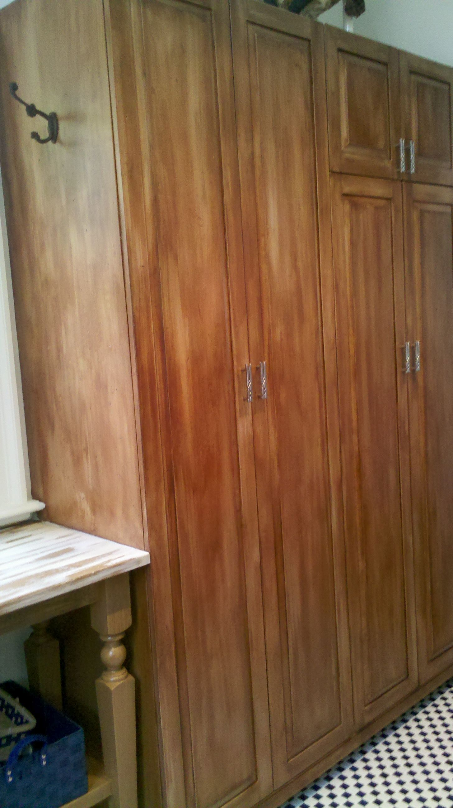